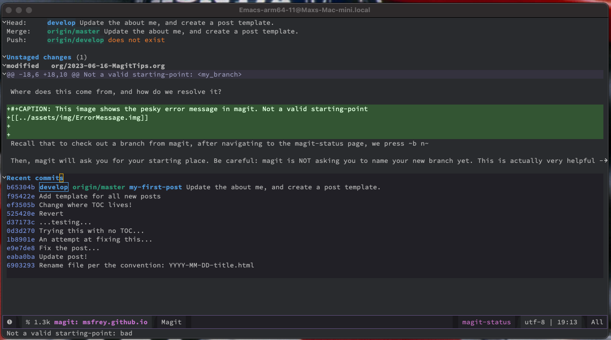

This ones mainly for me! But if there's anyone out there confused by this error, enjoy.
An extremely annoying error while learning magit branch workflows is the following:
Not a valid starting-point: <my_branch>
Where does this come from, and how do we resolve it?

Figure 1: This image shows the pesky error message in magit. Not a valid starting-point
Recall that to check out a branch from magit, after navigating to the magit-status page, we press b n
Then, magit will ask you for your starting place. Be careful: magit is NOT asking you to name your new branch yet. This is actually very helpful - we frequently want to create a branch not from master, but from some other existing branch. But here in lies the issue. It's asking for the starting place.
So – choose a branch that exists! THEN magit will ask you to name your new branch.